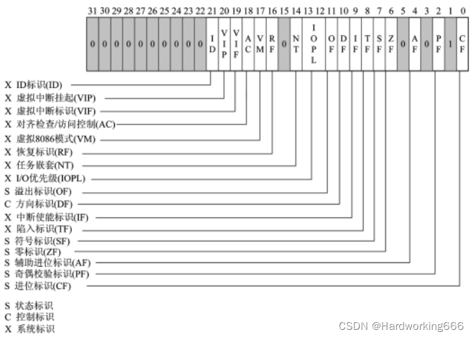
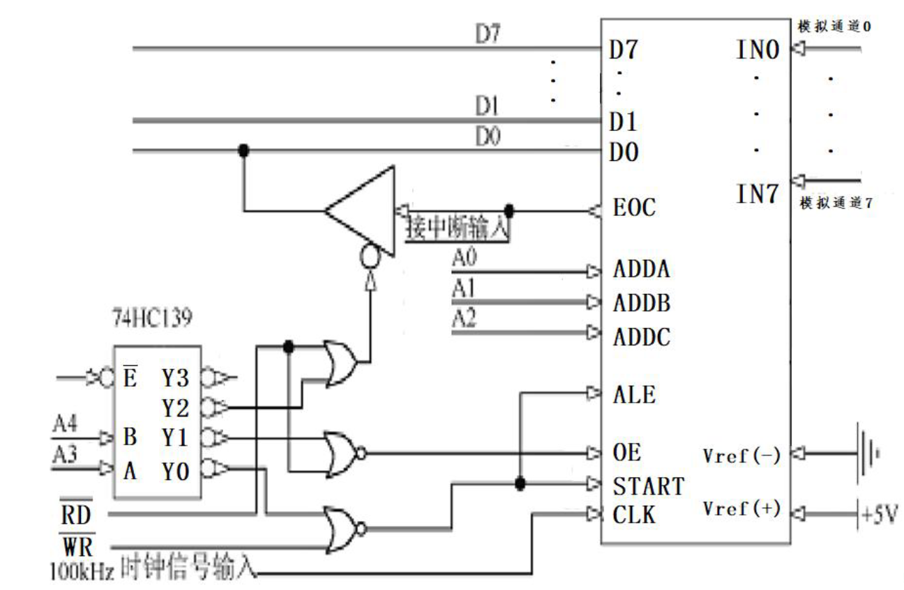

汇编&接口
一. 基础¶
1.1 基本格式¶
.data
...
;use to set data用来设定数据
;like the early c,data only allow to be signed on the front of file像早期的c语言一样，数据只能在最前面被定义
--------------------------------------------
.code
main PROC
...
main ENDP
end main
;file ignore words after"end main"文件忽略在end main后面的所有语句
;must include "main PROC"代码段必须使用main PROC（就像c语言要有主函数一样）
--------------------------------------------
.stack(可以不标)
;系统自动生成
1.2 主要寄存器¶
- 通用寄存器
| 寄存器名称 | 中英文含义 | 作用 |
|---|---|---|
| EAX | 累加器 Accumulator | (针对操作数和结果数据的)累加器，一般用于运算，另外还多用于函数返回值中，用于保存返回值 |
| EBX | 基址寄存器 Base Address Register | (DS 段中的数据指针)基址寄存器, 常用于存放存储器地址, 便于变量 |
| ECX | 计数器 Counter | (字符串和循环操作的)计数器，如在循环命令 LOOP 中，ecx 用来循环计数，每执行一次 loop，ecx 减 1 |
| EDX | 源变址寄存器 | （I/O 指针）计数器, 乘除指令中用作辅助累加器 |
| ESI | 源变址寄存器 Source Index Register | （字符串操作源指针）源变址寄存器 |
| EDI | 目的变址寄存器 Destination Index Register | （字符串操作目标指针）目的变址寄存器，EDI 和 ESI 多与特定指令，如 LODS/STOS/REP/MOVS 等一起使用，主要用于内存的复制。 |
| EBP | 基址指针寄存器 Base Pointer Register | （SS 段中栈内数据指针）扩展基址指针寄存器，表示栈区域的基地址 在函数被调用时保存 ESP 的值，函数返回时再把值重新返回给 ESP，保证栈不会崩溃，这称为栈帧技术 |
| ESP | 堆栈指针寄存器 Stack Pointer Register | （SS 段中栈指针）栈指针寄存器，指示栈区域的栈顶地址，PUSH/POP/CALL/RET 等指令可以直接用来操作 ESP |
- 指令指针寄存器 EIP
- 32 位指令指针寄存器(EIP)存放指令指针，即当前代码段中将被执行的下一条指令的线性地址偏移
- 程序运行时，CPU 根据 CS 段寄存器和 EIP 寄存器中的地址偏移读取下一条指令，将指令传送到指令缓冲区，并将 EIP 寄存器的值自增，增大的大小即被读取指令的字节数。
- EIP 寄存器的值一般不能直接修改，EIP 寄存器的更改有两种途径：一是通过特殊的跳转和调用/返回指令 JMP、Jcc、CALL、RET 等；二是通过中断或异常进行修改。
- 标志寄存器 EFlAGS
- IA-32 中标志寄存器的名称为 EFLAGS，其大小为 4 个字节(32 位)，由原来的 16 位 FLAGS 寄存器扩展而来。 EFLAGS 寄存器的每位都有意义，每位的值或为 1 或为 0，代表 On/Off 或 True/False。 其中有些位由系统直接设定，有些位则根据程序命令的执行结果设置。
- 32 位的 EFLAGS 寄存器用于存储算数操作符状态或其他执行状态。该寄存器中的各个位表示不同的标识，包括一组状态标识、一个控制标识和一组系统标识。EFLAGS 寄存器中的标识主要用于实现条件分支。
其中,与程序调试相关的状态标识包括:零标识(ZF),溢出标识(OF),进位标识(CF)和符号标识(SF)。各标识的具体含义如下:
- 零标识(ZF)。若算数或逻辑运算结果为 0,则 ZF 值为 1,否则 ZF 值为 0。
- 溢出标识(OF)。有符号整数溢出时,OF 置为 1;最高有效位(MSB)改变时,OF 置为 1。
- 进位标识(CF)。无符号整数溢出时,CF 置为 1。
- 符号标识(SF)。等于运算结果的最高位(即有符号整数的符号位);0 表示正数, 1 表示负数。
- 方向标识(DF)。另一个需要注意的标识是控制标识(DF),该标识位为方向标识,用于控制串处理指令处理信息的方向。当 DF 为 1 时,每次操作后使变址寄存器 ESI 和 EDI 减小,这样就使串处理从高地址向低地址方向处理;当 DF 为 0 时,处理方向相反。DF 标识由 STD 指令置位,由 CLD 指令清除。
- 陷阱标识(TF)和中断允许标识(IF)。它们是与中断和异常相关的标识位。如果 TF 标识位置为 1,CPU 将在执行完每条指令后产生单步中断,调试器使用该特性在调试程序时进行单步执行,该标识位还可用于检查调试器是否正常运行如果 IF 位置位,则 CPU 在收到中断请求后,应该对中断请求进行响应处理。
- EFLAGS 寄存器中的标识位及其功能：
1.3 函数¶
-
和 c 语言的函数类似，但是汇编的函数有以下要求
-
不能进行传参
-
无返回参数
-
-
定义函数的格式
- 可以看出在基本格式中的 code 段的 main 也是函数
-
函数的调用
-
函数与栈的关系：在用 call 指令的时候，将 call 所在语句的地址压入栈，遇到 ret 语句时候，取回地址跳回原位继续向下执行
CALL fname↔ ①push next②jmp fname
二. 常用指令¶
运算符号¶
没学会下次再写
注释 ；¶
相当于 c 语言的/ 用来表示后面的内容不编译，忽视
标号符¶
标号是程序的目标标志,总是和某地址相联系,供转移或循环指令控制转移使用.
可以联想为 c 语言的 goto 语句来使用（虽然 c 的 goto 用的不多 XD）
数据定义伪指令¶
通过数据定义语句可以为数据项分配存储单元，并设置初值。代表数据项的标识符称为变量名。
| 指令 | 意义 |
|---|---|
| DB | 单字节类型，占用8 位或1 个字节的数据，可以存储无符号整数、字符或其他数据 |
| DW | 双字节类型, 占用16 位或2 个字节的数据，可以存储无符号整数、地址或其他数据 |
| DD | 双字类型, 占用32 位或4 个字节的数据，可以存储无符号整数、地址或其他数据 |
| DQ | 四字类型, 占用64 位或8 个字节的数据，可以存储无符号整数、地址或其他数据。 |
| DT | 十字节型, 占用80 位或10 个字节的数据，可以存储实数或其他数据 |
| DS | 由多个连续的字节组成的一组数据，可以存储文本或其他数据 |
数值表达式¶
表达式结果是确定的数值，用于初始化内存单元
?数据项¶
若定义的变量处置不确定可以用“？”表示，这是分配一个与类型匹配的存储单元，用于保留内存单元
字符串¶
以 ASCII 码值得形式存放在存储区中，每个字符占据一个存储单元
重复定义¶
用 n DUP (表达式)与数据定义伪指令搭配使用 dup 可以嵌套使用
mov¶
mov A,B。将 B 的值传给 A，B 可以是一个数值，也可以用 offset 来取相对地址
可执行操作
- 寄存器到寄存器： 可以将一个寄存器的值移动到另一个寄存器中，例如
mov ax, bx。 - 立即数到寄存器： 可以将一个立即数（常数）移动到寄存器中，例如
mov ax, 10。 - 内存到寄存器： 可以将内存中的数据移动到寄存器中，例如
mov ax, [bx]。 - 寄存器到内存： 可以将寄存器的值移动到内存中，例如
mov [bx], ax。 - 立即数到内存： 可以将一个立即数移动到内存中，例如
mov byte ptr [bx], 10。- 需要指定大小
- 段寄存器： 在一些情况下，可以使用
mov指令将数据移动到段寄存器。
限制
- 不能直接将数据从内存移动到内存：
mov指令通常不能直接从一个内存位置移动数据到另一个内存位置。例如，mov [dest], [source]是不合法的。 - 不能将数据直接从立即数移动到立即数：
mov指令通常不能直接将一个立即数（常数）移动到另一个立即数。例如，mov 10, 20是不合法的。 - 大小不匹配：
mov指令要求源和目标的操作数大小必须匹配。例如，不能直接将一个字（16 位）从一个寄存器移动到一个双字（32 位）的寄存器中，除非使用适当的操作数大小前缀。 - 特殊寄存器的限制： 一些特殊的寄存器，如标志寄存器（flags），在一些情况下可能有限制。例如，在一些保护模式下，某些标志只能由特权级更高的代码修改。
- 段寄存器的限制： 在保护模式下，
mov指令对于一些段寄存器的使用可能受到一些限制，特别是在用户模式下。
cmp¶
对 A,B 的值进行比较，相当于是一个隐藏减法，不改变任何的值 底层原理是设定一个 flag=A-B，一般与后续的条件一起使用 只能比较整数，字母值，不能比较小数
jmp¶
无跳转跳转，类比于 c 的(while 1)多用于进行循环结构
条件转移¶
对于有符号数，使用有符号数的条件转移判断式，对于无条件数使用无符号数的条件转移判断式，都是 jump+if+xxx 的缩写，很好记
无符号数¶
b--below a--above e--equal n--not
- ja 大于跳转
- jae 大等于跳转
- jb 小于跳转
- jbe 小等于跳转
- je 等于跳转
- jna 不大于跳转
- jne 不等于跳转
- jnb 不小于跳转
有符号数¶
l--less g--greater e--equal n--not
- jg 大于跳转
- jge 大等于跳转
- jl 小于跳转
- jle 小等于跳转
- je 等于跳转
- jne,jng,jnl......
栈¶
没教完
第四章 指令系统¶
4.1 数据传送指令¶
-
实现: 存储器 ↔ 寄存器 ↔I/O

-
四种传送指令
- 通用数据传送
- 目标地址传送
- 标志传送
- 输入输出
4.1.1 通用数据传送指令¶
MOV dest，src¶
-
传送的是字节、字或双字
具体来说可实现：
MOV mem/reg1，mem/reg2 MOV reg，data ;立即数送寄存器 MOV mem，data ;立即数送存储单元 MOV segreg，mem/reg ;存储单元/寄存器送段寄存器 MOV mem/reg，segreg ;段寄存器送存储元/寄存器-
注意 : 指令中两操作数中至少有一个为寄存器
-
存储器 ← 存储器：
需要一个寄存器作为中介
-
MOV EAX, [EBX+ECX*4]把 DS 段中有效地址为：(EBX)＋(ECX)*4存储单元的内容送给 EAX 寄存器
-
-
MOV 指令使用规则：
- EIP 不能作目的寄存器
- 不允许
mem←mem(需要用寄存器作为中转) - 不允许
segreg←segreg- 因为mov segreg, segreg只是把一个段寄存器的值复制到另一个段寄存器，而不改变内存中的内容，所以它没有实际的作用 - 目的操作数不允许是立即数，也不允许是 CS 寄存器
- 不允许
segreg←立即数- mov 指令的规则 - 源操作数与目的操作数类型要一致
MOVSX 带符号扩展传送指令¶
-
格式：MOVSX dest，src；
-
操作：（dest）← 符号扩展（src）
-
两种格式：
-
-
注意：源操作数可以是 8 位或 16 位，而目的操作数必须是 16 或 32 位。
2.1.4 PUSH 入栈指令¶
-
格式：
PUSH SRC -
执行操作： (ESP) ←(ESP)-4 ((ESP)+3, (ESP)+2, (ESP)+1,(ESP)) ←(SRC)
-
几种用法：
2.1.5 POP 出栈指令¶
-
格式
POP DST -
执行操作 :
(DST) ←((ESP)+3, (ESP)+2, (ESP)+1,(ESP))
(ESP) ←(ESP)+4
-
几种用法
2.1.7 XCHG 交换指令¶
格式：XCHG reg，mem/reg 操作：交换两操作数的内容。 要求：
- 两操作数中必须有一个在寄存器中；
- 操作数不能为段寄存器和立即数；
- 源和目地操作数类型要一致。
- 该指令允许除立即数以外的任何寻址方式。 举例： XCHG BX, [EBP+ESI] ; (BX) (EA) XCHG AL, BH ; (AL) (BH)
地址传送指令¶
共有六种:
-
格式：
-
下面五个是指针送寄存器和段寄存器指令
4.2 算术运算指令¶
- 两种类型数据:
- 无符号数
- 有符号数
- 加减法指令，无符号和有符号数采用同一套指令。
- 注意：
- 操作数必须都是无符号数或都是有符号数。
- 使用不同的标志位来检查无符号数和有符号数的运算结果是否溢出。
4.2.1 加法指令¶
一. 不带进位的加法指令 ADD¶
-
格式：
-
例：
ADD 指令对标志位（指状态标志）都有影响。
-
例：
ADD DX, 0F0F0H-
执行前：[DX]=4652H

- 执行后：
(DX)＝3742H，ZF=0，SF=0，CF=1，OF=0结果正确。
-
二. 带进位的加法指令 ADC¶
-
ADC 指令在形式上和功能上都有与 ADD 类似，只是相加时还要包括进位标志 CF 的内容，例如：
- ADC 指令主要用于多字节加法运算中
ADD/ADC 对条件标志位(CF/OF/ZF/SF)的影响¶
- CF 位表示无符号数相加的溢出。
- OF 位表示带符号数相加的溢出。 $$ 1 结果为负 0 否则 SF= 1 结果为0 0 否则 ZF= 1 和的最高有效位有向高位的进位 0 否则 CF= 1 两个操作数符号相同，而结果符号与之相反 0 否则 OF= $$
三. 加 1 指令 INC¶
-
格式：INC reg/mem
-
功能：类似于 C 语言中的++操作：对指定的操作数加 1
-
例：
-
注：本指令不影响 CF 标志
- 不影响循环
4.2.2 减法指令¶
一. 不考虑借位的减法指令 SUB¶
-
格式： SUB dest, src
-
执行操作: (dest)←(dest) - (src)
-
注意：
- 源和目的操作数不能同时为存储器操作数
- 立即数不能作为目的操作数
-
例：
二. 考虑借位的减法指令 SBB¶
SBB 指令主要用于多字节的减法。 格式： SBB dest, src 操作： (dest)←(dest)-(src)-(CF) 例： SBB AX，CX SBB [ESI]，DX
三. 减 1 指令 DEC¶
作用类似于 C 语言中的－－操作符。 格式：DEC opr 操作： (opr)←(opr)-1 指令例子： DEC CL DEC SI
4.2.3 除法指令¶
- 无符号数除法指令：
DIV SRC - 带符号数除法指令：
IDIV SRC - 执行操作：
- 字节操作
- (AL) ← (AX) / (SRC) 的商
- (AH) ← (AX) / (SRC) 的余数
- 字操作
- (AX) ← (DX, AX) / (SRC) 的商
- (DX) ← (DX, AX) / (SRC) 的余数
- 双字操作
- (EAX) ← (EDX, EAX) / (SRC) 的商
- (EDX) ← (EDX, EAX) / (SRC) 的==余数==
- 进行除法前要对 EDX 赋初值
- 字节操作
4.3 逻辑运算指令¶
-
逻辑非指令：NOT OPR (OPR 不能为立即数)
执行操作： (OPR) ← ¬ (OPR) (不影响标志位)
- NOT 不允许使用立即数，其他 4 条指令除非源操作数可以是立即数，至少有一个操作数必须存放在寄存器，另一个操作数可 以是任何寻址方式。
-
逻辑与指令：AND DST, SRC
执行操作： (DST) ← (DST) ∧ (SRC)
-
逻辑或指令：OR DST, SRC
执行操作： (DST) ← (DST) ∨ (SRC)
-
异或指令： XOR DST, SRC
执行操作： (DST) ← (DST) ⊕ (SRC)
-
测试指令： TEST OPR1, OPR2
执行操作： (OPR1) (OPR2)
4.4 移位指令¶
-
逻辑左移
SHL OPR, CNT
-
逻辑右移
SHR OPR, CNT
-
算术左移
SAL OPR, CNT- 同逻辑左移, 都是在末尾补 0
-
算术右移
SAR OPR, CNT
-
循环左移
ROL OPR, CNT
-
循环右移
ROR OPR, CNT
-
带进位循环左移
RCL OPR, CNT
-
带进位循环右移
RCR OPR, CNT
4.5 串处理指令¶
- 串处理指令 : MOVS、 STOS、 LODS 、 CMPS、 SCAS
- 设置方向标志指令 : CLD、STD
- 串重复前缀 : REP、 REPE / REPZ、 REPNE / REPNZ
MOVS 串传送指令¶
- 四种格式
- MOVS
- MOVSB （字节）
- MOVSW （字）
- MOVSD （双字）
- 例：MOVS ES: BYTE PTR [EDI], DS: [ESI]
-
执行操作：
-
((EDI)) ← ((ESI))
- 字节操作：(ESI)←(ESI)±1, (EDI)←(EDI)±1
- 字操作： (ESI)←(ESI)±2, (EDI)←(EDI)±2
-
方向标志 DF=0 时用 + ，DF=1 时用 -
-
执行 REP MOVS 之前，应先准备：
-
源串首地址（末地址）→ ESI
-
目的串首地址（末地址）→ EDI
-
串长度 → ECX
-
建立方向标志
- CLD 使 DF=0
- STD 使 DF=1
-
STOS 存入串指令¶
-
格式：
- STOS DST
- STOSB （字节）
- STOSW （字）
- STOSD （双字）
-
执行操作：
- 字节操作：((EDI))←(AL), (EDI)←(EDI)±1
- 字操作： ((EDI))←(AX), (EDI)←(EDI)±2
- 双字操作： ((EDI))←(EAX), (EDI)←(EDI)±4
- 不影响条件标志位
LODS 从串取指令¶
格式： LODS SRC LODSB （字节） LODSW （字） LODSD （双字） 执行操作： 字节操作：(AL)←((ESI)), (ESI)←(ESI)±1 字操作： (AX)←((ESI)), (ESI)←(ESI)±2 注意:
- LODS 指令一般不与 REP 联用
- 源串一般在数据段中（允许使用段跨越前缀来修改）， 目的串必须在附加段中
- 不影响条件标志位
CMPS 串比较指令¶
- 格式：
- CMPS SRC, DST
- CMPSB （字节）
- CMPSW （字）
- CMPSD （双字）
- 执行操作：
1) ((ESI)) - ((EDI)) - 根据比较结果置条件标志位：相等 ZF=1; 不等 ZF=0 2) 字节操作：(ESI)←(ESI)±1, (EDI)←(EDI)±1 字操作： (ESI)←(ESI)±2, (EDI)←(EDI)±2
4.6 控制转移指令¶
- 无条件转移指令 JMP
- 条件转移指令 JZ / JNZ 、 JE / JNE、 JS / JNS、 JO / JNO、 JP / JNP、 JB / JNB、 JL / JNL、 JBE / JNBE、 JLE / JNLE、 JCXZ jecxz
- 循环指令 LOOP、LOOPZ / LOOPE、LOOPNZ / LOOPNE
- 子程序调用和返回指令 CALL、RET
- 中断与中断返回指令 INT、INTO、IRET
汇编器使用¶
- 有时在 cmp 两个内存变量时, 报错会报成 end main
一些模板¶
-
函数模板
-
void
myFun PROC ;; void myFun(int* arr, int n) input:<----入栈顺序 ;; return:void ; [ebp+4]: 调用函数位置的地址 ; [ebp+8]: arr ; [ebp+12]: n push ebp ; 暂存栈底寄存器 mov ebp, esp ; 修改栈底, 创建一个"栈帧" pushad ; 存放所有寄存器 ... ; 代码段 popad ; 恢复所有寄存器 pop ebp ; 恢复栈底寄存器 ret 8 ; 返回原函数, 并pop8字节(去除栈中的arr和n) ;; 也就是 传入2个4字节参数, 此时就ret 2*4(8) myFun ENDP
-
有返回值
myFun PROC ;; myFun(int* arr, int n) input:<----入栈顺序 ;; return:eax ; [ebp+4]: 调用函数位置的地址 ; [ebp+8]: arr ; [ebp+12]: n push ebp ; 暂存栈底寄存器 mov ebp, esp ; 修改栈底, 创建一个"栈帧" sub esp, 4 ; 为返回值预留4个字节 pushad ; 存放所有寄存器 ... ; 代码段 mov [ebp-4], eax ; 暂存返回值 popad ; 恢复所有寄存器 mov eax, [ebp-4] ; 保存返回值到eax add esp, 4 ; 去除预留个4字节 pop ebp ; 恢复栈底寄存器 ret 8 ; 返回原函数, 并pop8字节(去除栈中的arr和n) ;; 也就是 传入2个4字节参数, 此时就ret 2*4(8) myFun ENDP
-
第二季 接口设计!¶
写入读出信号
IN: 读数据, \(~RD\)置为低-
OUT: 写数据,¶
第二季 接口设计!¶
常用芯片¶
| 芯片型号 | 作用 |
|---|---|
| 8086 | 主控 |
| 8255 | I/O |
| 8253/8254 | 计时计数 |
| 0832 | DAC(数模转换) |
| 0809 | ADC(模数转换) |
| 8259 | 中断 |
写入读出信号
IN: 读数据, \(\overline {RD}\)置为低OUT: 写数据, \(\overline {WR}\)置为低
综合应用设计¶
某养殖场需要监控系统以监控池塘水质量，该系统能监测水体富营养化程度、 以及水位高低，并根据监测结果，做出 增强或减弱除污设备、打开或关闭进出 水管道阀门等相应操作以保障池塘水质量
由养殖场水质量监控系统需求，可知系统包含功能：
- 周期性采样水体中富营养化程度
- 使用传感器实时感知水体中富营养物质的浓度，将感知所得浓度转化为电压
- 周期性采样水体水位高低
- 使用传感器实时感知水体水位，将感知所得到水位高低转化为电压
- 周期性输出控制信号
- 根据采集数据，按照一定策略： a) 输出信号控制去污设备 b) 输出信号控制管道进出水阀门

基于中断的系统软件体系结构
START:
call Init_Interfaces ; 初始化其他接口
call SetINTVectors ; 设置中断向量表
sti ; 开中断
NEXT:
hlt ; 处理器进入休眠, 等待中断
jmp again
hlt
输入输出锁存 8282/8286¶

模数转换 ADC 0809¶


;;; sample0809(DX: PORT_0809_INx)
sample0809 proc
push dx
out dx, al ; 启动0809对应端口
; 检测EOC
readeoc:
MOV DX, PORT_0809_EOC
IN AL, DX ; 读入EOC的值(高/低)
test AL, 01H
JE readeoc ; EOC还为高
; 读出结果, 存入al
mov dx, PORT_0809_OE
in al, dx
pop dx
ret
sample0809 endp
数模转换 DAC 0832¶

计时器 8253¶

-
模式 2
- 用来定时发出中断, 转到 ADC
中断控制 8259¶

同一端口如何区分 ICW 和 OCW
用 A0 奇偶地址位区分
- ICW1 必须写入偶地址端口（A0=0, PA0_8259）
- ICW2 必须写入奇地址端口（A0=1, PA1_8259）
- ICW3 只有在 ICW1 中的 SNGL=0, 即开启级联时写入
- ICW4 只有在 ICW1 中 IC4=1 时才写入
ICW1 写入偶地址端口，2、3 写入奇地址端口 ICW 写完后继续进入 OCW1、2、3（根据奇偶地址来区分）

init8259 proc
push dx
mov dx, PORT_8259_A_0
mov al, 00010011b ; icw1
out dx, al
mov dx, PORT_8259_A_1
mov al, 00111000b ; icw2: 中断类型为56~56+8
out dx, al
mov dx, PORT_8259_A_1
mov al, 00000001b ; icw4
out dx, al
pop dx
ret
init8259 endp
setIntVectors proc
push dx
push ds
xor ax, ax
mov ds, ax
mov ax, seg code
mov SI, 224 ; 4 * 56
mov word ptr[SI + 2], ax
mov ax, offset timer0Handler
mov word ptr[SI], ax
mov ax, seg code
mov SI, 4*57 ;
mov word ptr[SI + 2], ax
mov ax, offset timer1handler
mov word ptr[SI], ax
mov ax, seg code
mov SI, 4*58
mov word ptr[SI + 2], ax
mov ax, offset timer2handler
mov word ptr[SI], ax
pop ds
pop dx
ret
setIntVectors endp
; 中断结束
send8259EOI proc
push dx
mov dx, PORT_8259_A_0
mov al, 00100000b ; OCW2 = 0010 0000
out dx, al ; 向8259发送中断结束命令
pop dx
send8259EOI endp